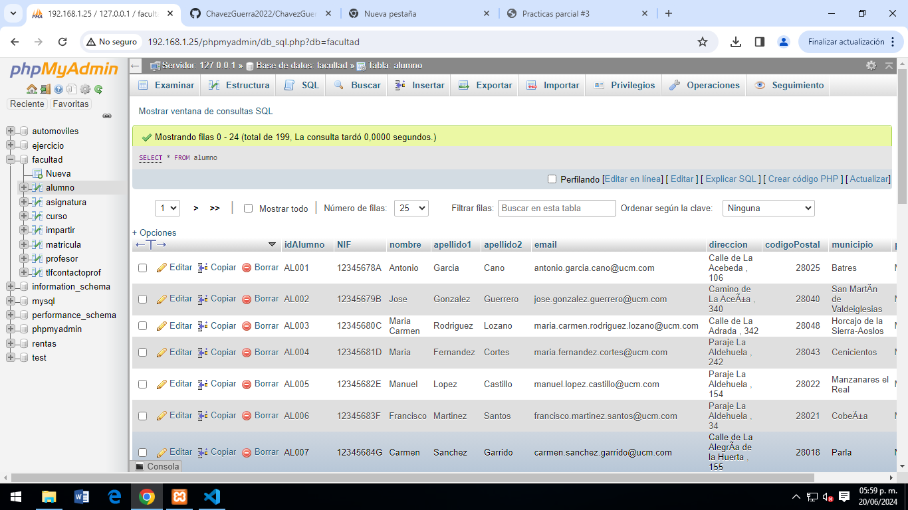
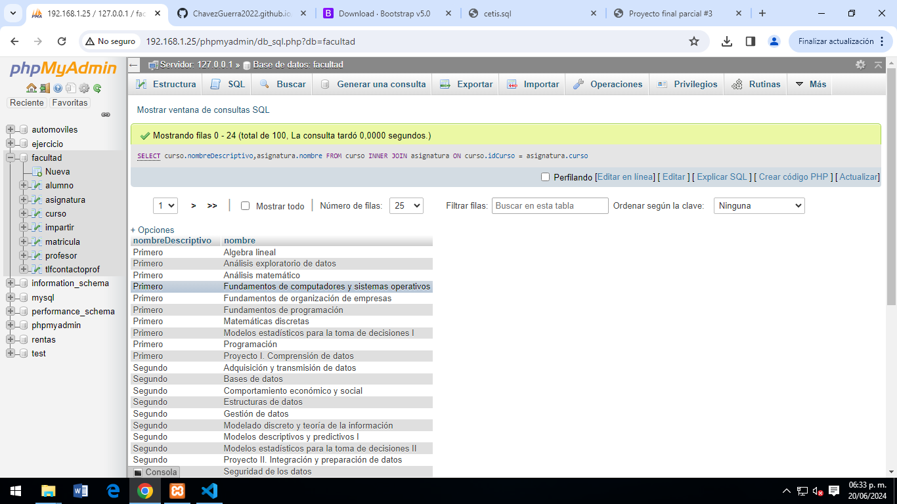
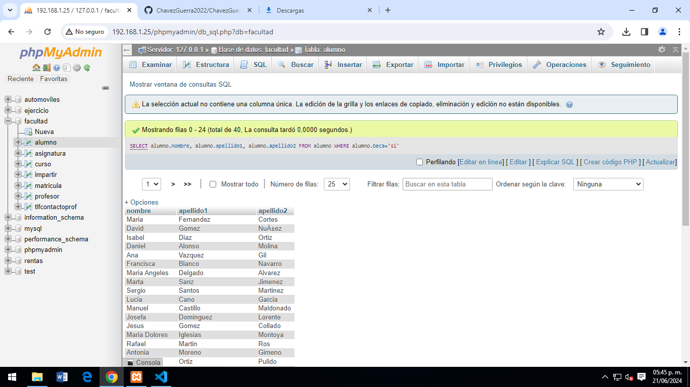
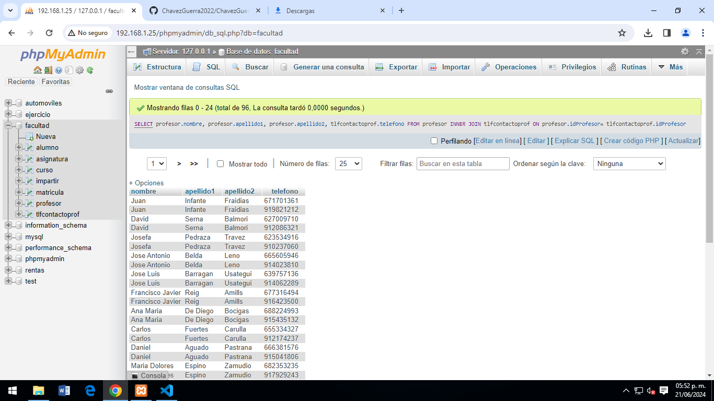
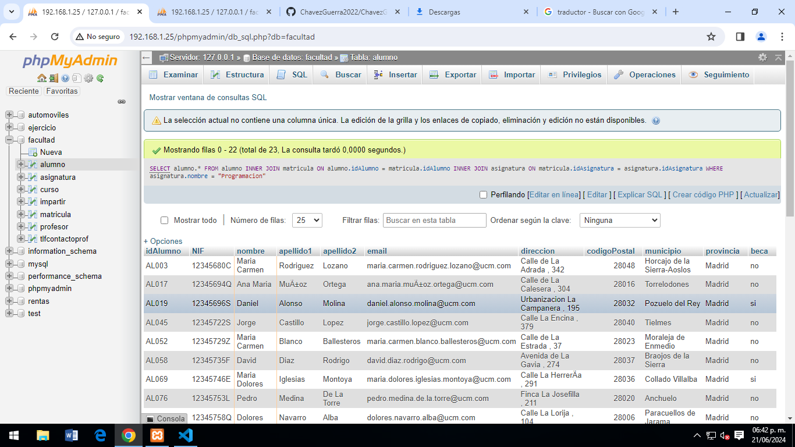
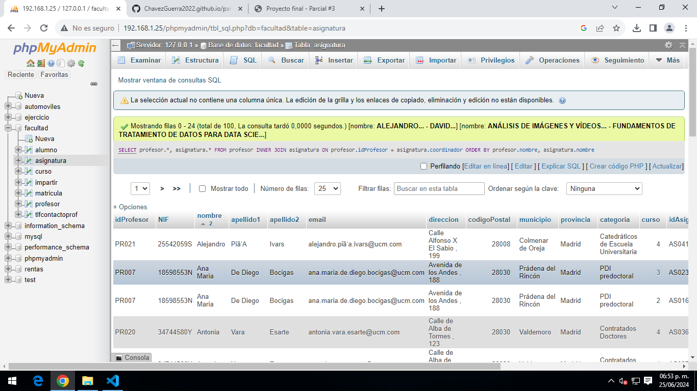
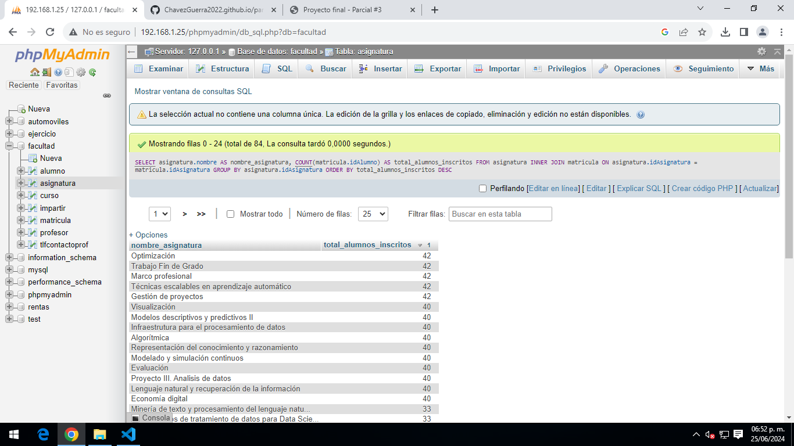

Consulta #1. obtener el listado de todos los alumnos de la facultad.
Consulta #2. Obtener el listado de los cursos (nombres) y su asignatura correspondiente.
Consulta #3. Obtener listado (nombre y apellido) de alumnos que tienen beca.
Consulta #4. Obtener listado de profesores (nombre, apellido y su numero de contacto.)
Consulta #5. Obtener listado de alumnos (todos los campos) que estan inscritos a la signatura d programacion.
Consulta #6. Obtener listado de profesores y asignaturas que imparten.
Consulta #7. Mostrar la asignatura que tiene mas alumnos inscritos y su total.
Consulta #8. Obtener listado de alumnos que les da clase el profesor con id PR048 (Jose Manual), sin importar en que asignatura este inscrito.
Consulta #9. Obtener listado de alumnos (todos los campos) que estan inscritos a la signatura d programacion.
Consulta #10. Obtener listado de alumnos (todos los campos) que estan inscritos a la signatura d programacion.